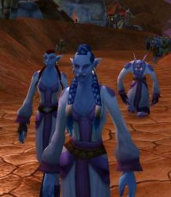
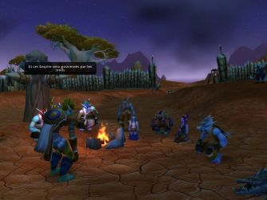
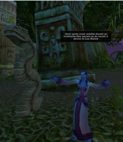
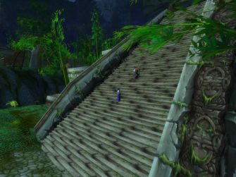
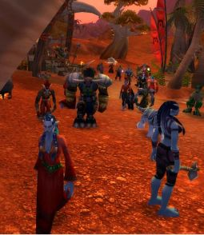
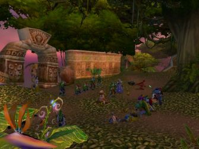
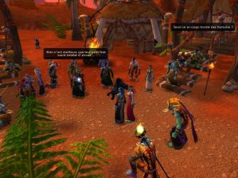

Les Terres de Kirin Tor
Nohan
Points : 6

Joué par :
[ Information masquée ]
Age : jeune adulte
Lieu de naisance : Jungle (n'en sais pas plus)
Signe de naissance : Marassa = Ours
Sexe : Femme
Race : Troll
Faction : Horde
Formation : Guerrier
Niveau : 18
Guilde : Orac'Loa
Artisanat 1 : Herboriste
Artisanat 2 : Dépeceur
Envoyer un MP
Informations hrp : Naolin'Ja est une femelle tourmentée par la marque que lui ont laissé les Marassa, les Jumelles Cosmique ou Loas de la Dualité, de l'Harmonie te du Chaos. Comme la Loa dont elle est mambo, elle a deux visages ...L'un réfléchit et sage...L'autre vif et sanguinaire, et bien plus encore...Un lourd secret l'habite et lui cause d'atroces souffrances mentales et physiques. Son entrainement Atal'Aï lui permet de dissimuler ses émotions, sauf une seule....Un manquement dans son éducation essentiel constitue une faille dans sa carapace...(que je vous laisse découvrir en jeu ^^ ). Elle est devenue Nohan, et cache avec talent son ancienne identité.
Description : En posant ses pieds sur le sol de Kalimdor, Naolin'Ja Sidd'Jin devint Nohan. Loin derrière elle, au plus profond des Marais, elle avait abandonné son identité Atal'Aï, sa force légendaire, sa fougue et sa volonté. Mais surtout, on lui avait ôté une part d'elle-même sans laquelle elle se sentait comme nue : sa sagesse, son secret, celui qu'elle portait en elle qui lui déchirait le coeur et ravissait son âme à la fois, celui qui avait fait d'elle l Oracle des Atal'Aï. Une douloureuse cicatrice en forme de rune couvrait désormais son sein gauche.
Nohan avait rejoint les siens, d'autres Atal'Aï déguisés sous d'honteuses identités Darkspears, chargé tous de la même mission : assurer le retour d'Hakkar. Dans ce but, ils fondèrent Orac'Loa, petite école d'enseignements spirituels vaudoo.
Lors de la disparition mystérieuse d'Eter'En leur Guide, et d'autres houngans et mambos, Nohan vit la nécessité d'assurer la notoriété de l?école. Elle laissa sa fougue sur le côté, et devint la sage et posée mambo que l'on connaît. Parcourant les rues d'Orgrimmar, observant du coin de l'oeil les Trolls susceptibles de devenir de loyaux et malléables disciples, s'assurant le respect des plus influents, les conviant à des simulacres de Cérémonies dédiées aux Loas. Sa priorité est devenue autre : réimplanter les traditions vaudoo, le culte des Loas dans le coeur des Trolls. Elle prépare le terrain, soigneusement, méthodiquement. Et malgré les migraines qui la terrassent, elle sourit en l'honneur d'Hakkar.
[Le texte originel était trop long...lisez le dans le Journal]
Ère du Conflit [7]
Lune de la Force [1]
Décade du Panda
Décade du Gorille
Décade de l'Ours [1]
Qui suis je....
Je suis Naolin'Ja la tourmentée, Siid'Jin la rêveuse.
Je suis descendante d'une famille qui a trop prié ces demi divinités inférieures, et leur faiblesse s'est abattue sur moi telle une malédiction. Je suis Naolin'Ja la maudite, Siid'Jin la respectée.
Lorsque ma mère grosse et mûre à point, fut sur le point de mettre au monde ses deux enfants, Marassa s'introduit en elle, et en elle La Divinité Aux Deux Faces se divisa. La Noire et la Blanche s'enroulèrent autour d'un des foetus, le caressèrent, et l'encouragèrent de leurs paroles suaves comme le miel et acérées comme la pointe d'une épée. Le bébé sur lequel les mains des Jumelles Cosmiques s'étaient posées se fraya difficilement un passage au travers du col utérin. Son lien de sang s'enroula autour du coup de sa soeur, se resserrant davantage à chaque mouvement que le travail imprimait dans le ventre de la mère. Le bébé sortit dans un grand cri de douleur, entraînant l'autre à sa suite et l'étranglant avant même qu'il ne puisse voir le jour.
Je suis Naolin'Ja la meurtrière, celle qui porte le poids de la mort dès la naissance, celle qui a assassiné sa propre jumelle.
Depuis, l'esprit de Siid'Jin la sacrifiée habite mon corps, côtoyant ma propre volonté, installé dans la grande blessure mentale que m'ont infligée les Marassa. Une douleur qui sans cesse monte, me submergeant parfois à tel point que je peux plus réfléchir. Cette peine est ma force, cette souffrance est ma faiblesse.
Depuis, je suis devenu l'Ombre et la Lumière, l'Ordre et le Chaos, l'Eau et le Feu.
Depuis, c'est-à-dire depuis toujours, ma soeur et moi nous nous livrons un combat sans trêve à l'intérieur de ma propre chair. Depuis, nous nous consolons et nous nous choyons sans répit.
Pleines d'Amour et de Haine.
Siid'Jin, la bonne, la sage, l'illuminée, celle qui rêve éveillée, celle qui lit dans la trame subtile du temps, celle qui parle sans que je ne puisse jamais la comprendre. Siid'Jin ma soeur, l'utile arme, celle qui voit, celle qui entend.
Moi, Naolin'Ja, je vis, j'agis, je discute et je fais. L'entaille profonde que je porte dans mon âme me donne une force terrible, une énergie que j'ai appris à contenir et à cracher comme un venin macéré resté trop longtemps dans sa fiole.
Ce sont sans doute ces talents étranges qui ont attiré sur moi l'attention des adorateurs d'Hakkar. J'étais leur proie idéale.
Je savais à peine marcher qu'ils m'ont arrachés aux bras ensanglantés de ma mère, celle qui m'a trahie, celle qui fut la cause de ma déchéance et de mon ascension réunies. Ils avaient massacrés tous les miens, efficacement, méthodiquement. Tous les miens, cette bande de faibles et méprisables Trolls qui persistaient encore à refuser l'évidente autorité du Dieu Unique ! Je suis Naolin'Ja Siid'Jin, servante humble et fière, vierge d'esprit comme de corps, adoratrice d'Hakkar le Grand, Oracle de la communauté ancienne des Atal'Aï !
Je crache sur mon propre sang, souillé qu'il est par la médiocrité de mes géniteurs. Je hais Marassa pour les tourments que j'endure chaque jour. Et je les adore pour la puissance qu'elles m'ont insufflée.
-« Nooooooooooon ! » hurla Naolin'Ja, se débattant comme un beau diable.
-« Tenez là ! Il ne faut pas qu'elle puisse se détacher ! »
Quatre serviteurs d'Hakkar empoignaient fermement les membres de la jeune Troll, tâchant de lui attacher les lourdes chaînes qui la maintiendraient immobile durant la cérémonie. La femelle, sous des dehors graciles possédait une force et une puissance indomptable. Il fallu deux Trolls de plus pour maîtriser la furie. Suspendue par les bras, les pieds solidement arrimés au sol, Naolin'Ja Siid'Jin se débattait encore. Pourtant tout mouvement lui était désormais inutile et ne servait qu'à provoquer de profondes entailles dans sa chair. Elle ne se libererait pas.
Jirzi'Din s'approcha. Il était suivi de celui qui prendrait la relève au sein de leur petite communauté secrète, un vieux prêtre du nom de Ro'Kan. Un vaste pentacle étrange était tracé à la craie sur le sol du temple. De grandes ombres se détachaient sur les murs, et les visages étaient déformés par le jeu d'ombre et de lumière. La lueur vacillante des bougies donnait à la scène une dimension particulièrement effrayante pour tout non initié. Deux mambos, le visage grave et les yeux silencieux, apportèrent les instruments et les calebasses qui serviraient au rite.
Naolin'Ja hurla de plus belle, et son cri était si strident que bon nombre des participants se bouchèrent les oreilles.
-« Vous n'avez pas le droit ! Noooooon ! Vous ne pouvez pas me faire ça ! »
-« Calme toi ma belle ! » déclara Jirzi'Din d'une voix empreinte de douceur et d'une telle fermeté que ses ordres ne prêtaient pas à discussion. Mais c'était peu connaître Naolin'Ja de penser qu'elle se soumettrait aussi facilement. Dans un soubresaut à peine pensable, elle parvint à donner un violent coup de genoux dans l'estomac du houngan. Avant de recevoir elle-même un choc sur la tête en représailles.
-« Veux tu que toutes nos années d'efforts soient réduites à néant pour un misérable caprice ! » murmura le prête en rage.
Alors les yeux de Naolin'Ja se révulsèrent, et d'une voix comme sortie d'outre tombe :
-« La destinée de notre peuple est claire, droite et pure...Nous endurerons la douleur, la honte et marcheront dans la boue durant cent lieues. Mais du Bas, nous nous dresseront vers le Haut, et la Montagne Ensanglantée acceptera nos pas...Que le sceau me retienne prisonnière, qu'il me rende muette, et qu'il vous permette Ro'Kan, Ô grand houngan, à vous seul, de décider quand ma Voix doit se faire entendre...Ceci sont mes dernières paroles ! »
Ce n'était plus Naolin'Ja qui parlait, mais Siid'Jin la rêveuse, la tempérée.
Le prêtre se tourna vers Jirzi'Din, ils s'échangèrent un regard lourd de complicité. Puis, il se saisit d'une longue tige métallique qu'il plongea dans une vasque de feu. Les prêtresses psalmodièrent un chant lent et solennel. Les tambours rythmaient la cérémonie. Ro'Kan arracha la tunique de l'Oracle, et dessina au fer brûlant un symbole ésotérique sur sa poitrine palpitante. Elle supporta la douleur sans broncher mais deux larmes roulaient le long de ses joues.
-« A bientôt » chuchota Sidd'Jin
Un cataplasme de plantes aux vertus sacrées fut posé sur la plaie.
Ainsi l'esprit de Siid'Jin fut scellé, ne pouvant désormais s'exprimer qu'à la demande de Ro'Kan, le vieux prêtre. Ainsi Naolin'Ja pourrait devenir Nohan et accomplir ce pourquoi elle a été choisie.
*
* *
Nohan n'était pas la plus jolie Troll du village, mais elle possédait cette force de caractère impropre aux femelles qui faisait tout son charme. C'est du moins ce que pensait Jin'Khar, le plus valeureux chasseur de cette petite communauté de Darkspears récemment installée sur une des îles de l'archipel des Echos. Jin'Khar, assuré de son charisme et de sa haute stature avait maintes fois essayé de soumettre Nohan, mais elle était la seule à lui avoir résisté. Pire, elle lui avait même balancé la marmite pleine de ragoût brûlant à la tête. Loin de le mettre en colère, ce geste qui aurait mis la femelle dans une situation périlleuse si cela n'avait été lui, titillait son orgueil et son désir. Il fallait que d'une façon ou d'une autre Nohan lui appartienne.
Un jour, alors qu'il revenait de la chasse portant négligemment le raptor qu'il avait abattu d'une seule flèche, il aperçu la jeune Troll remplissant des jarres de terre cuite à la rivière. Sans plus de réflexion, il laissa tomber le souper sur le sol et s'approcha silencieusement de la femelle. Il allait la surprendre et dans ce moment de vulnérabilité ou elle ne saurait que faire, il pourrait enfin la séduire. Lorsqu'il fut juste derrière elle, Jin'Khar empoigna ses bras frêles et lui susurra quelques mots bien choisis à l'oreille. Ces paroles n'étaient apparemment pas du goût de Nohan, qui se débattit tant et si bien que les deux jeunes gens tombèrent à l'eau.
-« Je vais te dresser, moi, tu va voir sale petite vermine ! » déclara le Troll en la giflant plusieurs fois. Un grand sourire éclairait son visage, la situation semblait lui plaire extrêmement.
Avalant de grandes tasses d'eau, suffoquant presque, humiliée par les coups du mâle, Nohan sentit son sang bouillir dans ses veines. Elle était vive et souple. Elle n'eut aucune difficulté à se saisir d'une des flèches de Jin'Khar et à la lui planter dans la gorge. Le Troll, hurlant de douleur lâcha sa proie qui s'enfuit à toutes jambes horrifiée par ce qu'elle avait commis.
Nohan regarda derrière elle, et vit Jin'Khar, essayant de s'extirper le dard, probablement empoisonné, profondément enfoncé dans sa chair. Elle vit son corps musclé gesticuler désespérément dans les flots, puis elle aperçu l'ombre d'un crabe géant s'approcher.
-« Il est mort, ce n'est pas de ma faute. » se rassura t'elle.
Mais elle n'en pensait pas un mot. Ses jarres gisaient, brisée sur la rive. On aurait tôt fait le lien entre elle et la mort du chasseur.
Alors sans un adieu à sa famille et ses amis, elle s'en alla.
On ne sait comment Nohan vécut durant les quelques années qui s'écoulèrent entre sa fuite et sa réapparition soudaine. Lorsqu'elle revint dans la région de Durotar, son regard avait changé, ses traits étaient durcis, et d'autres détails encore que seul ceux qui l'avaient aimé pourraient remarquer.
Lune d'Agilité [3]
Décade du Tigre
Décade du Singe [2]
L'Empereur (extrait du journal de Nohan)
Première cérémonieLune Noire, Cycle de Baron Samdi, 2ème jour,
(...) Klom'Ak, Kezaral et mon amie Sunkhar terrassaient les marins à l'intérieur du fort, la petite voleuse ayant sans doute réussi à les convaincre de l'accompagner dans son opération « Je vide les poches » . Prothan et moi étions au sommet de la tour. J'éprouvais une joie ivre de pouvoir enfin laisser éclater au grand jour toute la fureur que j'avais contenue en moi depuis mon arrivée à Durotar. Voir le sang couler, donner de grands coups de haches, courir sauter, massacrer, cela me faisait un bien fou !
C'est alors que le vent du Nord nous apporta ces paroles étranges?Un Troll appelait tous ceux de sa race à se rassembler sur la place de Tranche Colline. Il se faisait appeler l'Empereur. Cela nous intrigua...
- « Allons y, dis je par la force de notre gemme de communication, Ce sera l'occasion de nous faire connaître. »
- « Regagnons Tranche Colline, nous y verrons cet Empereur de nos propres yeux et pourrons peut-être faire entendre la voie des Loas. » dis je cette fois tout haut.
Seule Sunkhar ne semblait pas intéressé, mais cette petite voleuse, aussi grande fervente de Legba soit elle, est trop indépendante que pour faire partie d' Orac Loa, ou même pour en partager les desseins.
Nous marchions donc sans bruit vers le petit bourg. Le vent nous apportait sans cesse les appels du Troll. Aux abords du village, je me changeai, je n'aime pas que l'on puisse voir au premier coup d'oeil que je suis une guerrière farouche, presque assoiffée de sang....quelle ironie....Je préfère encore que l'on m'appelle Prêtresse, c'est tout ce qui me reste à présent de Siid'Jin, ça et les migraines. (...)
Un grand Troll d'allure imposante se tenait au centre de Tranche Colline. Il portait une haute crête jaune vif et des atours qui laissaient à penser qu'il avait déjà un certain prestige. Un petit public s'apprêtait à entendre ses révélations. Je reconnu dans la foule Xoa'Ra devenu Haajzul le pèlerin, et Vasiric, un jeune un peu perdu qui se réfère à son infidèle de maître, comme s?il détenait toutes les vérités du monde. D'autres, notamment une femelle à la longue chevelure rose haranguait la foule à écouter ledit monarque.
- « Ecoutez, moi tous ! » dit il d'une voix un peu trop pompeuse.
(...)
Malheureusement, je ne pourrais retranscrire toute la conversation (...) Ce fou désirait regrouper tous les Trolls sous la bannière d'un empire, il voulait en quelque sorte réscuciter l'empire déchu des Gurubashi. Et s'allier à la Horde. Au début, il eut quelques difficultés à se faire entendre. Il faut dire que ses propos ne pouvaient que nous paraître ridicule. Mais, je crois que l'une ou l'autre personne de notre groupe eurent tôt fait de comprendre ce qu'on pouvait tirer de ce mâle. A un moment je lui demandai la permission de m'exprimer.
- « Et quel est cet Empereur qui prétend vouloir régner sans même connaître les anciennes divinités de notre peuple ? Connaissez vous encore l'histoire de Legba ? »
- « Non...j'ai oublié? » avoua t'il sous les moqueries bien pensées et calculées d'Haajzul.
C?est alors que je vis précisément à quel point ce monarque nous serait utile dans notre croisade.
Je lui fis comprendre en peu de mots, qu'un Empereur digne de ce nom se doit d'être entouré de la présence divine. Qu?à la tête d'un Empire, il doit connaître les anciennes traditions, les Dieux de son peuple.
- « Nous vous enseigneront, et puis vous pourrez enseigner votre peuple à votre tour »
J'étais la première personne de l'assistance à soutenir son point de vue, alors il commença à s'intéresser au mien. Klom'Ak lui raconta la légende du premier Loa. La foule semblait presque plus intéressée par les exploits divins que par les discussions politiques. Kelzaral fut happée par la Trollette dissipée aux cheveux roses, il nous fit un petit signe et nous dit par la gemme que nous portons tous :
- « Je vais aller initier cette pauvre jeune femelle. »
Je savais bien ce que cela signifiait dans la bouche de cet adorateur de Shango, qui ne délaissait pas pour autant Erzulie. (...)
Durant le débat, plusieurs personnes d?Orac Loa vinrent rejoindre nos rangs. Notamment Zael'Ma, une terrible prêtresse qui eut tôt fait de comprendre que la vanité de ce chef de pacotille était sa faiblesse, et qu'il en était facilement manipulable. Sous mon conseil, Protan se mis à discourir à son tour. Il est dommage qu'il attende toujours un signe de ma part pour prendre la parole, lui qui est un orateur si talentueux. Il découvrit rapidement les failles du plan de l'Empereur, et les lui fit comprendre. Le mâle semblait perdre de son assurance, et quand Prothan lui conta l'histoire du guerrier Gurubashi le plus puissant que la terre n'ait jamais porté, cel...deviendrait le maî... feu et des armées célestes, il....mblait compl...ent a notre merci. Alors (... les écrits deviennent illisibles...)
Lune Noire, Cycle de Baron Samdi, 5ème jour. (Extrait du journal de Nohan)
(...) La première cérémonie d'Orac Loa est dédiée au Prince de la Mort. Est-ce un présage ? Si c'est le cas j'espère qu'il est positif, annonciateur de la bonne réussite de notre croisade et non pas de sa...fin. (...)
Nous nous étions rassemblé sur la petite place de Tranche Colline ou quelques jours plus tôt nous avions rencontré un futur « empereur ». Mambo'Jin avait passé de longues heures sans sommeil et sans mouvement à nous confectionner des robes sur mesure, toutes blanches. Des noires ou des bleues glacées auraient été plus adéquates, mais je me tais, je ne suis après tout aux dires d'une certaine personne, qu'une capricieuse.
Notre Guide est une fois encore porté disparu, je connais sa sagesse, mais je m'étonne de le voir si peu. Nous surveille t'il dans un coin, à la manière d'un fauve, attendant la moindre erreur pour surgir et nous sermonner comme il aime tant à le faire ? C'est bien probable ! En ce cas, je n'en écrirai pas plus! Qui sait ce dont il est réellement capable.
Nous attendions que les fidèles viennent nous rejoindre. Je ne pensais pas que nous aurions réussis l'exploit quasi divin de rassembler des foules, mais j'étais déçue par le manque de ferveur de plus en plus manifeste qui règne aujourd'hui. Cinq fidèles seulement sont arrivés, et une seule de nos nouveaux adeptes. Les autres méritent une sanction ! Quel manque de respect ! Quel manque de ferveur ! Etre adepte signifie soumission, humilité et dévouement envers les Maîtres, envers les Enseignements et envers les Divinités. Au moins, Maarchggh sous ses dehors de petite brute écervelée et grincheuse cache en réalité des qualités certaines qui feront d'elle une excellente disciple. Une fois encore Marassa me démontre son enseignement universel et son omniprésence. La rebelle cache une dévote, et la dévote cache une rebelle.
Las d'attendre, nous sommes finalement parti, marchant solennelment au rythme du tambour de Kelzaral, Prothan en tête, suivi de ses deux mambos, Mambo'Jin et moi-même. Malgré le nombre restreint de participants, cette procession avait quelque chose d'émouvant. Je fouillais en moi-même quelques indices qui me révéleraient le futur, mais depuis que Siid'Jin est réduite au silence, les trames incertaines de l'avenir me sont définitivement occultées. Qu'il est douloureux de perdre ainsi une partie de soi même. (...)
Tout au long du chemin nous criions d'une seule voix nos louanges au Gardien des Terres Glacées de l'Agonie. Tout au long du chemin j'ai sentis, presque pour la première fois, que dans la désunion, nous étions finalement unis.
Nous arrivâmes au cimetière de Sen'Jin. Prothan prit place au centre et nous demanda de le rejoindre. Mambo'Jin et moi-même avions allumé les feux sacrés afin de sanctifier le cercle tandis que Klom'Ak et Kelzaral partirent en quête d'une belle créature à sacrifier. Puis le musicien ritualiste fit sonner son tambour avec virtuosité. Il a un don réel pour susciter la transe. Je me souviens du reste de la cérémonie comme au travers d'une brume épaisse. Les vapeurs du feu crépitant, les odeurs qui s'en dégageaient, et l'énergie du Maître des Mort qui petit à petit se faisait sentir...Je dansais encore et encore, tournoyant au rythme des mains de Kelzaral, ne sachant plus ou était le nord ni le sud, flottant dans les abîmes intemporels ! Alors le sanglier pénétra l'enceinte sacrée du Vévé, et Prothan le purifia. Au nom du Baron Samdi, il invoqua en lui-même le pouvoir de la glace, ce qui dût lui coûter énormément d'énergie puisqu'il est disciple du feu et d'Ogoun. Dans une grande gerbe d'éclats bleutés et cristallins, il pétrifia l'animal. Puis Klom'Ak et Kelzaral qui laissa de coté son tambour un instant, frappèrent à mort la créature. Le grand Houngan entama le chant rituel, laissant sa voix et son corps suivre les mouvements des percussions. L'énergie de Samdi était palpable, elle s'immisa en chacun de nous et les Trolls dans l'assistance se laissèrent toucher et entrèrent en transe avec nous.
Qui a-t-il par-delà le mur de la mort ?
Un monde vide tout blanc ?
Des abîmes, le néant ?
Un calme plat tendu de noir ?
Nul ne le sait, un seul voulu savoir.
Pour connaître la vérité, il fit tant d?effort?
Ooooooooo Samdiiiiii !.Prince de la nuit.
Avec ton chapeau haut,
Salue nous bien bas, ha !
Ooooooooo Samdiiiii!.Baron de minuit
Le puissant amusé, le Puissant courroucé,
Puni le Troll curieux
En exauçant ses voeux.
Le voilà maintenant, régnant,
Sur des plaines de glace et de sang.
Samdi, le Baron, il se fit appeler.
Ooooooooo Samdiiiiii!.Prince de la nuit.
Avec ton chapeau haut,
Salue nous bien bas, ha !
Ooooooooo Samdiiiii!.Baron de minuit
Gloire à toi, maître du voyage sans retour !
Samdiiiiiiii
Gloire à toi, seigneurs des soupirs !
Samdiiiiiii
Garde les âmes noires dans l'enfer de tes glaces
Et conduit les fidèles auprès du Puissant.
Samdiiiiiii
Loué sois tu, gardien de l'autre monde ! Garde nos morts et préserve nos vies !
La voix grave de Prothan faisait vibrer nos âmes, et l'on dansa encore un long moment (...).
Puis le tambour ralenti et s'arrêta subitement, en un coup le fluide magique disparu et je retombai durement sur le sol, épuisée, l'esprit encore tout retourné. Petit à petit, les gens s'en allèrent. C'est le moment que Sunkhar choisit pour nous rejoindre ! Quelle étourdie ! Elle pu néanmoins profiter de l'espace sanctifié pour faire une offrande digne de ce nom.
Une jeune Troll du nom de Joujou resta longtemps après la cérémonie. Visiblement craintive et influençable, je m'approchai d'elle pour la rassurer et lui ouvrir l'esprit aux Loas. Klom'Ak, se chargea de lui raconter la légende de Legba que j'ai désigné selon ma méthode habituelle comme étant son protecteur. Une adepte de plus...qui sait? Cela dépendra de nos talents, et d'autres choses encore...
Décade du Faucon [1]
Cérémonie en l'honneur de Damballah
Lune Noire, Cycle de Damballah, 9ème jour. (Extrait du journal de Nohan)
Dix jours que nous nous échinons tant bien que mal à organiser une grande Cérémonie en l'honneur de Damballah. Dix jours que je prêche à tout vent, essayant de convaincre tel ou tel Troll de faire preuve de foi en rendant hommage au Loa, maître des Savoirs et des Secrets. Dix jours de labeur...Notre quête devient ardue : Orac'Loa n'est pas née depuis longtemps qu'elle traverse déjà des difficultés...des épreuves qui nous sont sans doute envoyé par l'Ecorcheur d'Ames afin de tester notre fidélité et notre ferveur. Notre guide qui disparaît, les Houngans et Mambos dispersés dans la nature à tel point que je ne peux plus compter que sur l'intervention de Legba pour les rencontrer ! Quelle ironie, maintenant que tout est fini, l'épuisement se fait sentir, et ma tête semble prête d'exploser comme ces feux que fabriquent les Gobelins (...)
Nos efforts ne furent pas vains. Devant l'auberge de Tranche Colline, les Orcs ont sans doute ressenti une belle frayeur en voyant un tel rassemblement de Trolls. J'ai réussi à convier l'Empereur de Strongleronce (...) qui est venu, accompagné de la future Impératrice et de hauts dignitaires de son empire qui s'étend semble t'il de plus en plus...Quelques amis que j'avais rencontré, nous ont rejoint pour le simple plaisir de se voir, car malgré tout nos efforts, ils restent d'incorrigibles païens qui n'ont foi qu'en eux même. D'autres encore, des visages inconnus, des visages étranges comme ceux de cette confrérie d'assassins...Certains voyageaient à dos de raptors, et cela donnait à notre procession un air important qui me ravi.Je ne m'attendais pas à une telle présence. Comme quoi, il reste encore des Trolls pour qui les traditions signifient quelque chose. Tout au long du voyage, Kelzaral jouait du tambour et rythmait nos pas jusqu'au rivage de Sen'Jin. Puis de là, nous avons rejoint l'île à la nage. Les ruines d'un grand temple s'y dressent encore, ou de fières statues semblaient nous observer de leur regard énigmatique.
Les pèlerins se sont assemblés en arc de cercle, Prismik, l'un de nos valeureux adeptes s'est assis parmi eux, et nous, les quatre Houngans d'Orac'Loa avons commencé leur initiation par la légende de Damballah que Mambo'Jin a brillement contée.
Quelques personnes durent nous quitter et ne purent participer à l'épreuve initiatique. L'épreuve pour Damballah était simple...sous le couvert d'une simple course, les participants devaient expérimenter par eux même l'enseignement du Loa de la Connaissance et comprendre son message. Au signal, ils partirent tous, tachant de se surpasser, et de courir le plus vite possible.Seule Joujou était restée. . Je l'observai et lui demandai pourquoi elle n'était pas partie comme les autres. Elle me répondit calmement :
- « J'observe et j'examine chaque recoin de cette île, à mon aise. »
Puis elle me regarda une lueur malicieuse dans le regard.
- « Les serpents ne nagent pas. »
Elle me surprit, elle était probablement la seule à avoir compris véritablement le sens de l'enseignement de Damballah. Au lieu d'expérimenter, comme les autres, les erreurs de la jeunesse du Loa, son empressement et sa vanité, elle revivait la sagesse que lui avait procuré sa métamorphose en serpent. Je n'avais pas prévu que quelqu'un parviendrait à ce stade de réflexion !
Pendant le retour des coureurs, un mâle aux cheveux blanc s'adressa à nous en ces termes :
- « Si c'est une blague, je ne la trouve pas drôle ! Regardez ce qui se cachait dans mon sac ! »
Son ton montrait clairement qu?il était de ceux qui ne croient pas en l'invisible, et semblait outré d'avoir trouvé un magnifique serpent brun dans sa besace.
Nous lui expliquâmes qu'il n'y avait pas de doute, que c'était là un signe de Damballah, un honneur qui lui était fait. Au bout d'un moment, je sentis le rationalisme de ce Troll septique se fendre un peu, et dans la fissure s'immisça un respect pour l'animal qui l'avait rejoint volontairement.
- « Je vais le garder, après tout, Il ne s'est pas montré agressif. »
L'Empereur avait été le plus rapide, et il fut félicité pour sa vaillance, suivi par Nalka, une Troll valeureuse qui avait choisi d'arpenter le chemin opposé, et ensuite par la future Impératrice, qui en tant que bonne femelle Troll était restée quelques peu en arrière de son fiancé afin de ne pas lui voler l'honneur de la victoire ! (...) Chacun partagea ses impressions. Je fus satisfaite d'entendre Prismik, l'un de nos adeptes conclure que la course ne lui avait pas apporté la connaissance. Il avait donc compris. D'autres expliquèrent à leur tour ce qu'ils avaient ressentis, tous s'étaient plus ou moins rendu compte que ce n'était pas la rapidité ni la victoire qui leur apporterait l'essentiel. Encore une fois, Joujou démontra sa sagacité d'esprit, et pour cela, elle reçu le Cobra Noir.
Peu de personnes restèrent pour la cérémonie, qui se déroula en petit comité. L'on commença le rituel par les chants, la danse et la musique.
Damballah ! Damballah !
Il était comme la rivière,
Insouciant et fier.
Damballah ! Damballah !
Il était comme le vent,
Vif et inconstant.
Damballah ! Damballah !
Il courait de ci de là,
Sans respect et sans lois !
Damballah ! Damballah
Que l'essssprit du Sssserpent,
Nous emplisssse de ssssagesssse...
Que l'essssprit du Sssserpent,
Nous ssssussssure sssses promesssses...
Damballah ! Damballah
Tellement dissipé dans sa vie,
Qu'il finit par en être maudit,
Damballah ! Damballah
Sous la forme d'un majestueux serpent,
Il fut transformé, des siècles et des siècles durant.
Damballah ! Damballah
La Terre, ses secrets, lui confia
Le Ciel, la patience, lui enseigna
Damballah ! Damballah
Que l'essssprit du Sssserpent,
Nous emplisssse de ssssagesssse...
Que l'essssprit du Sssserpent,
Nous ssssussssure sssses promesssses...
Damballah ! Damballah
Ainsi, après avoir médité durant un millénaire
Des secrets et des savoirs il devint le Loa Maitre.
Gloire à toi ! O Damballah !
Puis Haajzul amena la créature qui allait être offerte en sacrifice. Je lui tranchai la gorge de deux grands coups de hache, son sang coula, et j'invoquai Damballah, prise dans une transe terrible. Je sentais l'énergie du Loa descendre sur nous. Elle nous enveloppa dans son nuage de tiédeur, Damballah était parmi nous, son aura était presque palpable, il allait choisir une forme pour se matérialiser. C'est alors que l'Empereur sembla pris de spasmes. Son regard était perdu. Damballah l'avait choisi pour le chevaucher, et nous pûmes entendre sa voix par la bouche du souverain.
- « Cela fait une éternité que je n'ai pas été invoqué. (...) Je vous demande, Maître de l'Orac'Loa, d'enseigner aux Trolls, la connaissance. Rendez aux Trolls leur Terres et leur Traditions ! »
Le Loa dit d'autres choses encore, puis quitta le corps tremblant de l'Empereur. Celui-ci était on ne peut plus impressionné, il y a de quoi ! Le passage d'un Loa en soi - même laisse des marques aussi profondes que les abysses, des plaies béantes qui ne se refermeront jamais. Pour le meilleur et pour le pire ! Je suis bien placée pour en parler (...). Nous avons ensuite procédé au rituel des offrandes devant la statue du serpent, puis nous allions regagner le petit village de Sen'Jin pour la veillée. C'est alors que je fus interpellée par Joujou qui souhaita rejoindre notre école. Je n'ai pas hésité deux secondes, cela fait suffisamment de temps maintenant qu'elle nous prouve sa ferveur. Ensuite, tandis que l'Empereur expliquait à Haajzul sa façon de concevoir son empire, j'ai échangée quelques mots avec Nalka, cheftaine des Darjoolka. Elle était venue spécialement pour découvrir qui était cette petite école dont on commençait à parler. Elle nous promit son aide, si toute fois nous ne commettons aucun acte répréhensible ! (...)
La veillée fut courte. Tous étaient fourbu de fatigue, et abusèrent des potions du Sorcier Docteur.
Lune de l'Esprit [3]
Décade de la Chouette [1]
Retour au Temple Englouti
Cela faisait un cycle complet que Naolin'Ja parcourrait Kalimdor en tous sens afin de retrouver le vieux prêtre déguisé en ermite. Elle finit par supposer qu'un malheur avait surpris le mâle, et qu'il était peu probable de le revoir vivant.
- « Je serais bien heureuse de trébucher sur son cadavre » grommela la jeune femelle entre ses dents.
Mais malgré le sentiment jubilatoire de vengeance qu'elle ressentait à cette idée, elle n'en n'était pas moins consciente de la position délicate dans laquelle se trouvait désormais la Mission. Hakkar éprouvait il sa fidélité et sa lucidité ?
Peu de solutions s'offraient à elle. Elle devait à tout prix, et ce, dans le plus grand secret, rejoindre le Temple Englouti sur l'autre continent, et expliquer la situation au Houngan Jirzi'Din. Seul lui était en mesure de prendre une décision, et lui seul était capable de lui transmettre le pouvoir de desceller Siid?Jin. Du moins, le pensait t'elle.
Jirzi'Din était furieux de revoir l'Oracle qu'il avait envoyée une Lune plus tôt afin d'accomplir un mission préparée depuis des années. Ses yeux fulminaient, et si la situation n'avait été aussi critique, il est probable qu'il aurait écorché vif Naolin'Ja, retirant de sa souffrance le plus vif plaisir !Cependant, il n'en fit rien, et au lieu de torturer la pauvre femelle, il lui confia une tâche périlleuse. Celle d'amener à bon port et aussi discrètement que possible, la seconde vague d'houngan et mambo Atal'Aï envoyée afin de renforcer les rangs d'Orac' Loa.
- « Avant de vous quitter, une dernière chose Grand Houngan : donnez moi le pouvoir de libérer la voix de ma soeur. Maintenant que Rak'An a disparu, elle est comme morte au fond de moi-même... »
Le prêtre eut un regard étrange, presque sadique, et lui dit ceci :
- « Seul Rak'An détient ce pouvoir.Cependant, si tu retrouves son corps, ou ne fut ce qu'une touffe de ses cheveux, à l'aide du rituel sombre du Rappel de l'Ame, tu pourras concocter un baume à appliquer sur le sceau qui a défiguré ta poitrine, et ainsi desceller Sidd'Jin un bref moment. »
*
* *
Alors que Naolin'Ja parcourait le dernier couloir sombre qui la menait vers la sortie du Temple Englouti, elle fut prise d'une crise de migraine subite et violente. Instinctivement, elle posa sa main sur la rune de chair brûlée qui lui laissait une vilaine cicatrice.
- « Siid'Jin » murmura t'elle
Sans trop savoir pourquoi, elle revint sur ses pas. Dans la salle ou elle avait quitté Jirzi'Din quelques instants plutôt, elle vit le grand houngan en pleine discussion avec une femelle aux épaules étroites.
- « Naolin'Ja, te revoilà déjà » ironisa le vieux Troll sans se retourner « Tu tombes bien. Voici Nolia'Ji, ses traits ne te sont peut-être pas inconnu? »
Après observation, l'ancienne Oracle remarqua avec stupeur que le visage implorant qui lui faisait face lui ressemblait comme deux gouttes d'eau. Un peu plus jeune sans doute, mais quasi identique.
-« Qui est ce ? » demanda t?elle la voix vibrante de colère
-« Ta petite soeur ! » répondit Jirzi'Din appuyant chaque syllabe comme pour enfoncer plus profondément une lame dans la chair. « Lorsque nous t'avons recueilli, elle était encore un bébé, la seule survivante de ta famille?Dire qu'elle a failli perdre la vie à l'instant ! Quelle ironie, n'est ce pas ? Mais te voilà . Je ne peux donc tuer ta propre soeur devant toi. »
Il sourit, riant presque, découvrant un peu plus ses défenses jaunies.
-« Observe cette jeune personne, vois ses hanches, larges et rondes, idéales pour la reproduction, n'est ce pas ? Vois tu, nous avions élevé Nolia'Ji à l'écart, nous désirions en faire une mambo d'Aida Wedo afin qu'elle offre à Hakkar, comme la Loa, de nombreuse âmes en sacrifice. Et cette mijaurée refuse de s'unir aux mâles que nous lui avons présentés dans ce but ! Que puis je faire d'un esprit rebelle comme celui là ? Je m'en remet à ta sagesse, Naolin'Ja. Après tout, elle est du même sang que toi. Tu aimeras sans doute l'exécuter toi-même, comme tu l'as déjà fait avec Siid'Jin. »
A ces mot, Naolin'Ja sentit son sang bouillir dans ses veines. Elle arracha la dague que lui tendait le prêtre. Ses yeux lançaient des éclairs. Elle s'approcha de la toute jeune femelle, à peine sortie de l'enfance qui tremblait de tous ses membres et lui ouvrit la bouche. D'un geste, elle lui trancha la langue et la jeta aux pieds de Jirzi'Din.
-« Elle ne sera plus insolente désormais ! Qu'elle devienne l'esclave d'Orac'Loa, nous aurons besoin d'une vierge qui pourra offrir son sang à Hakkar ! Trouvez lui un nouveau nom et qu'elle parte avec les autres ! »
D'un pas vif, Naolin'Ja sortit de la pièce. Jirzi'Din semblait satisfait, comme si la scène s'était déroulée exactement comme il l'avait prévu.
Décade de la Baleine
Décade du Lapin [2]
Zul Gurub
Cérémonie en l'honneur d'ErzulieExtrait du journal intime de Nohan. Ceux qui ont traduit cette page ont réussi à comprendre les passages censurés]
Lune Rouge, Cycle d'Erzulie, 3ème jour,
Depuis qu'il a été béni par Damballah, l'Empereur de Strongleronce m'inquiète. S'il nous accorde définitivement sa confiance, son respect, et boit nos paroles, il acquiert une assurance et un pouvoir de plus en plus grand. Récemment il m'a fait part de ses rêves, ou il est mis en danger par des démons. Il est persuadé que l'on cherche à l'atteindre, et à nuire à l'empire. Il m'a demandé à moi, qu'il a nommé pompeusement « Diplomate », de l'aider à découvrir ses ennemis et de réunir les Houngans et Mambos d'Orac'Loa afin d'en discuter.
La réunion devait avoir lieu dans la Vallée des Esprit ou j'avais retenu pour lui une superbe hutte troll de deux étages. Evidemment, une hutte dans la vallée des Esprits ne fait pas assez « impérial », Murthagh, l'Empereur, nous a donc convié à le suivre dans Strongleronce.
J?'tais accompagnée d'Ajak'Ati, l'un des Houngan tout fraîchement arrivé du Temple Engloutit. Nous avons suivi l'Empereur dans la jungle humide, cette jungle d'où nous avons été chassé, des millénaires auparavant par l'empire qu'il tente de ressusciter. Nous avons joué notre rôle à la perfection, feignant ne sachant tenir une arme convenablement, nous avons été défait, mis à terre tant de fois par les bêtes féroce, que l'Empereur, bien fièrement arrivait à peine à tenir en respect lui-même ! Il nous a mené plus profondément, dans le dédale des territoires des panthères nocturnes. C'est là, à deux pas de l'ancienne capitale Gurubashi, qu'Ajakati est tombé et n'a pu se relever, ou du moins l'a admirablement simulé. Murthagh ne pouvant rien faire pour mon pauvre acolyte m'a prié de le suivre encore, et de ne révéler ce qu'il allait me montrer à personne. Je lui promis, mais de toute façon, mon sens de l'orientation incertain ne m'aurait pas permis de retrouver le chemin secret que nous empruntâmes.
C'est alors que nous pénétrâmes Zul'Gurub. L'Empereur l'avait reconquise, et y avait fait ses quartiers. Perché impérialement sur leurs montures, les généraux de l'Empire, Padisham, Gashin et Nazgrim encadraient leur suzerain. Je sentais la vanité de leur entreprise. Et pourtant tandis que je parcourais à leur suite l'immense et magnifique citée, j'en ressenti un sentiment oppressant. Je faisais mine de rien, mais de voir ce monarque parcourant Zul'Gurub qu'il avait récupéré avec autant de facilité m'inquiétais. J'avais eut raison de garder un oeil sur ce mâle dès qu'il eut émis le projet de rassembler des Trolls sous sa bannière sur la petite place de Tranchecolline. J'avais eut raison de m'associer à lui, et par des discours mielleux m'être assurée qu'Orac'Loa aurait suffisamment d'influence sur lui que pour détourner l'attention des Gurubashi d'Hakkar. Alors que j'étais perdue dans ses sombres pensées, les généraux lancèrent des fusées d'artifice en criant des grands « Gloires à l'Empire ! Mort à Hakkar ! ». Mon sang ne fit qu'un tour, mes tripes se retournèrent en moi-même mais je criai également :
-« Mort à Hakkar ! »
Cependant, je manquais de conviction, et l'Empereur le sentit. Je rattrapai rapidement mon dérapage ne lui susurrant des paroles rassurantes :
-« Empereur, Hakkar est mort depuis longtemps, tué par l'Empire Gurubashi. Vous ne devez craindre qu'il revienne, d'autant plus que vous avez reconstitué une armée puissante ! »
- « J'ai rêvé d'Hakkar, et dans un livre à Booty Bay, il est écrit qu'une prophétie annonce son réveil. Vous devez nous aider à nous protéger d'Hakkar. Le ferez vous ! » me demanda t'il d'un ton presque suspicieux.
-« Bien sur, je prierai pour vous...Les Loas vous protégeront. D'ailleurs, vous êtes protégé par Damballah? »
L'Empereur paru rassuré, et tandis que nous gravissions les hautes marches d'une pyramide, je lançai mentalement toutes sortes de malédictions sur le lieu. Qu'il est étrange que Damballah ait choisi de chevaucher ce Troll. Les Loas sont les esclaves d'Hakkar...Comment expliquer dès lors qu'ils bénissent l'un de ses ennemi ? Peut-être est ce un leurre ? Peut-être Damballah bénit Murthagh afin de mieux le tromper?Après tout, il est le Loa du mensonge...
[img_right]Extrait du journal de Nohan)
S?il y a bien un Loa que je ne prie pas, c?est Erzulie ! Son succès auprès des mâles m?agace presque autant que la bêtise qui règne partout autour de moi ! Qu?a cela ne tienne ! En tant que mambo d?Orac?Loa, je sais comment attirer les foules. Ce vieux dicton humain convient parfaitement à la situation : on n?attrape pas les mouches avec du vinaigre. La cérémonie d?Erzulie sera belle, fastueuse et suivie d?une fête ou les Trolls pourront se divertir et tomber dans la débauche autant que faire se peut ! (?)
Lune Noire, Cycle d?Erzulie, 8ème jour.
Lorsque je revint de la capitale, la petite place du village de Sen?Jin était noire de monde. Erzulie avait déjà accompli son office en attirant un public nombreux. Nalka, cheftaine de la Tribu Darjoolka était déjà présente. Zilijur et d?autres Trolls de sa tribu avaient également répondu à mon invitation. L?Empereur de Strongleronce et sa fiancée étaient au rendez vous, ainsi que la jeune Marna aussi jolie que discrète. Elle ferait une bonne adepte, elle semble malléable et douce, comme se doit de l?être une véritable femelle Darkspear de souche ! Laissez moi rire ! Je fut surprise également par la présence d?un Orc qui nous demandait de parler de façon à ce qu?il comprenne, ce à quoi je lui ai répondu en refreinant mon envie subite d?insolence, que la fête était Troll et qu?elle se déroulerait dans cette langue, mais que s?il avait envie de regarder il était le bienvenu. En moins joli, car malgré le temps passé à étudier ce langage abominable, j?ai toujours un accent à trancher au couteau !
Nous nous sommes rendu en fière procession jusqu?à l?Ile Sacrée. Après les mots de bienvenue indispensables, Prothan a brillamment conté la légende d?Erzulie. Ce mâle est fait pour devenir un grand, un très grand Houngan. C?est peut-être lui qui devrait prendre la place d?Eter?En, notre « regretté » Guide assassiné. Il me semble d?ailleurs bien plus capable que lui de nous guider avec sagesse, d?autant plus qu?il a prouvé auprès de moi ses « compétences », et que ?.sa loyauté légendaire le pousse à écouter mes directives.
Il s?est ensuite emparé d?une jarre emplie d?un mélange secret de boue et de terres diverses et s?est empressé de purifier chaque membre de l?assistance en lui dessinant une rune sur le front. Zuul?Jin dont s?était la première cérémonie à nos côtés à quelque peu bafouillé, rendant mes répliques sans intérêts, mais cela a peu d?importance.
Je crois que c?est à ce moment là que Xork est arrivé. Il fait partie d?une tribu d?assassins et est assez proche de Murthagh. J?ai commis l?imprudence devant ses incessantss assauts, de lui accorder une danse, comme on dit chez les humains. Je voyais à son regard qu?il n?avait pas oublié ma promesse, ce qui me mettait dans une situation délicate. En tant que mambo, en tant que vierge (?) je n?ai pas le droit de favoriser un tel ou un tel. Par chance, Prothan, au moment de former les Couples Sacrés de la cérémonie me l?a imposé comme partenaire afin de montrer aux ignorants comment réaliser un massage digne d?Erzulie. Le discret personnage semblait bien heureux de la situation. D?autres l?étaient moins. Je pense notamment à Nalka qui était tombée sur un rustre de la pire espèce. Encore l?un de ces Darkspears dégénérés qui ont oublié la force des femelles, et pensent pouvoir régner en seuls maîtres sous prétexte de leurs défenses plus imposantes.
Les cadeaux furent échangés, le Troll malappris reçu une grosse gifle bien placée. Je n?avais rien prévu, j?ai donc promis un secret en échange du cobra noir que j?ai reçu de Xork. Prothan lui s?est dévoué à un Homme Vache. Je ne sais ce qu?il faisait là, mais peu importe, il semblait satisfait d?être devenu un Tauren Vaudoo !
Le massage devait permettre aux fidèles une détente complète, et une approche différente de leur corps, afin d?ouvrir leur esprit à l?enseignement de l?ancienne princesse Gurubashi. Je ne sais quel effet cela aura eut sur leurs petites cervelles étriquées, je ne sais s?ils auront réellement profité des bienfaits de cette technique. Ils semblaient heureux et se sont laissé emportés facilement dans la transe. Gadrihun, tout fraîchement débarqué, encore vêtu de ses défroques sentant la moisissure, jouait du tambour presque aussi bien que Kelzaral ne l?aurait fait, et Prothan de sa voix grave chantait :
4*2 Ell' fut princess' de notre empire.
4*2 Ell' fut prêtress' pour nous séduire.
4*2 Ell' fut maîtress' de nos plaisirs.
4*2 Ell' fut traîtress' à en mourir.
6*2 Ell' est symbol' de faim, inassouvi désir,
6*2 qui nous pousse à agir, qui cause notre fin.
3*4 Erzulie était belle, attirant l'attention.
3*4 Mais du cycle du sang, c'était ell' l'exception.
3*4 Il est dit qu'en tout temps fur'nt stéril's les actions
3*4 d'Erzulie, malgré tant de charnelles relations.
4*2 Ell' fut princess' de notre empire.
4*2 Ell' fut prêtress' pour nous séduire.
4*2 Ell' fut maîtress' de nos plaisirs.
4*2 Ell' nous caress' et nous déchire.
6*2 Ell' est symbol' sexuel, inassouvi désir,
6*2 qui nous pousse à agir, mâl's et femelles.
3*4 Erzulie nous apprend à dompter nos pulsions.
3*4 Nos envies sont changées en talents par passion.
3*4 Il est dit qu'en usant souvent des tentations,
3*4 Erzulie commandait ses amants dans l'action.
4*2 Ell' fut princess' de notre empire.
4*2 Ell' fut prêtress' pour nous séduire.
4*2 Ell' fut maîtress' de nos plaisirs.
4*2 Ell' nous empress' pour ell' d'agir.
6*2 Ell' est cette Loa, inassouvi désir,
6*2 qui nous pousse à agir, en imposant sa loi.
Une tigresse fut sacrifiée, puis l?esprit d?Erzulie fut invoqué. Comme les autres fois, notre ferveur, nos talents, notre fidélité furent récompensé. Par contre, il est un fait que je ne m?explique pas ?Erzulie a choisi comme « proie » Padisham, général de l?Empire de Strongleronce, et par sa bouche elle nous a commandé d?unir et de bénir l?union de Murthagh et Syam, elle a déclaré que leur destin serait grand. Pourquoi ? Pourquoi l?empire Gurubashi qui se relève de ses cendres est il béni par les Loas ? (?) Evidemment, nous, houngan et mambo d?Orac?Loa savons bien ce que signifie « être béni par Erzulie », mais néanmoins cette question restait imprimée dans mon esprit à tel point que je n?arrivais plus à me concentrer sur ce qu?il se passait. Lorsque je me remis de mes sombres pensées, plusieurs Trolls, et les quelques Orcs de l?assistance s?en furent pour prêter main forte aux habitants de la Vallée des Epreuves qui étaient attaqués par l?Alliance. J?eu même droit à de sévères remontrances de Xork, qui ne comprenait pas que nous ne nous jetions pas sur nos armes en pleine rituel afin de défendre une patrie qui nous concerne peu.
Au lieu de célébrer la guerre dans un bain de sang, nous avons officié le mariage de l?Empereur et Syam, aujourd?hui devenue Impératrice. Comme la fête n?avait pas été prévue, la cérémonie fut simple, presque rudimentaire. Prothan et moi, préparâmes les mariés chacun de notre côté. Je confiai à Syam un grigri, et l?enduit d?un parfum envoûtant afin de lui procurer une nuit de noce digne d?Erzulie ! Je lui susurrai également l?un des nombreux secrets que se doit de savoir une femelle afin de devenir véritablement maîtresse de son foyer. Ensuite, je l?amenai au centre des ruines et j?allumai le feu sacré. Ils marchèrent en rond tout autour du foyer comme l?exige la tradition vaudoo afin de simuler la roue perpétuelle de la vie. Peu de Trolls étaient encore présents, la plupart avaient rejoint la bataille dont on entendait vaguement l?écho. Peu de Trolls félicitèrent Murthagh et sa compagne. Pour un empereur, il n?eut pas un mariage impérial, mais au moins pourrait on penser, il fut béni par Erzulie elle-même !
Avant de regagner le village, Nalka fit une donation très généreuse à notre école en me remettant une bourse teintante. Cela me surpris, et je ne sais si je la remerciai comme il convient. La cérémonie fut une réussite. Du moins je commence à entrevoir les fruits de nos efforts. Notre école commence à être connue, de nombreux Trolls semblent intéressé par notre cause (?). Certains nous rejoignent spontanément. Notre mission semble bien lancée?mais nous avons des obstacles qui se dressent sur notre route. Nous seront-ils profitable ?
La fête, par contre fut assez calme. Le peuple Troll serait il finalement moins débauché que ce que je ne pensais ? Notre influence se fait elle déjà ressentir ? Je ne sais?Toujours est il que je passai une partie de la soirée à divulguer quelques secrets à une certaine Aife qui désirait amener son amoureux à l?épouser. J?espère qu?elle en aura fait bon usage ! Je regrette l?absence de Zael?Ma, elle en sait tellement plus que moi sur les pratiques qu?enseigne Erzulie aux femelles. Moi, je suis finalement d?une déplorable ignorance sur ce sujet, puisque jamais je n?aurai l?occasion de me servir de ces conseils. La virginité me pèse parfois (?).
Certains passages du journal de Nohan on été volontairement coupé et censuré.
Troisième Ère [3]
Lune de la Force [2]
Décade du Panda [1]
Cérémonie en l'honneur de Lukou
 (Extrait du journal de Nohan)
(?) Cette cérémonie sera particulière. Ma main tremble d?impatience tandis que j?écris ces lignes. J?ai hâte de constater les réactions du nos fervents?Les avons-nous suffisamment préparé à ce qui va se passer ? L?occasion m?a été donnée, gloire soit rendue à Hakkar, de rencontrer Khajakur, un étrange Troll, un peu fou, houngan de Lukou. Cela m?a semblé providentiel. Je l?ai donc convié à participer au rite, à officier la Cérémonie aux côtés de Ker?Jin. Ainsi, sa présence appuiera notre position, et nos pratiques aux yeux de l?assistance.
J?en rit d?avance?Lorsque j?ai expliqué en quoi consisterai l?initiation et le rituel, il a ouvert des yeux tout rond mais a accepté sans broncher le rôle qui allait lui être confié.
Lune Blanche, Cycle de Lukou, 9ème jour.
Les infidèles auraient du être sacrifié sur l?autel. Si Legba les place à nouveau sur ma route, je promet de me venger de cet affront et de laver la souillure qu?Orac?Loa a du subir cette nuit. Tout avait bien commencé pourtant. Les fidèles arrivaient en flux réguliers sur la petite place de Sen?Jin. Des nouvelles têtes, d?anciennes connaissances. Il y avait moins de monde, mais cela ne m?étonne guerre?Après tout Lukou, n?est pas une Loa aussi attirante qu?Erzulie, et pourtant bien plus utile à mon sens ! En attendant Prothan qui traînait sur la route d?Orgrimmar, nous faisions patienter les arrivants en leurs souhaitant la bienvenue, et en discutant de choses et d?autres. Certains se bagarraient pour le plaisir. Dont deux énergumènes à moitiés vêtu qui se révéleraient être plus tard d?abominables infidèles. Je crois que même les Faces Vertes n?adoptent pas de comportement aussi puérils.
Nous nous rendîmes sur l?île Sacrée. Ker?Jin se plaça au centre, prêt à officier pour la première fois. Je sentais son angoisse?Khajakur se tint à côté de lui. Il aurait été préférable de le présenter d?abord, mais Ker?Jin, sans doute trop empressé d?arriver au moment qui lui plaisait le plus, se hâta de conter en duo avec notre invité la légende de Lukou.
Puis, nous devions démontrer à l?assistance la grandeur de la Loa en blessant deux adeptes désignés que les Houngans soigneraient ensuite, afin de les préparer mentalement à subir la même chose. Lorsque Ker?Jin annonça que « l?Epreuve du Sang » allait commencer, les deux raclures de Kodo devinrent intenables et voulurent se battre à tord et à travers. L?un d?entre eux eut même l?audace de frapper notre Houngan. J?étais tellement surprise par tant d?irrespect que je n?eut pas la présence d?esprit de réagir. Comme je m?en veux à présent ! Comment ai-je pu me montrer si faible, moi, qui ai reçu un enseignement si sévère. A force de côtoyer les faibles, m?affaiblirais je à mon tour ?
Le chaos se fit sentir?Le rituel fut chamboulé?Nos Vévés furent piétinés, mais par la grâce de Lukou, par l?inébranlabilité de Prothan, la Cérémonie poursuivit son cour. L?initiation n?aura sans doute pas porté ses fruits, mais le sacrifice eut lieu.
Ker?Jin entama le chant Sacré, et en écho Khajakur lui répondait de sa voix joyeuse de grands « Lukou léééé bon » :
Lukou était forte, Lukou était sage
Mais Lukou savait que toujours avec l'âge
Les guerriers perdaient leur force au combat
Les anciens leur sagesse du savoir des Loas.
Soyons heureux des griffures
Soyons heureux des brûlures
Soyons heureux des griffures
Car c'est Lukou qui nous guérit.
Lukou était sage, Lukou était forte
Et Lukou appris la langue de la flore
Qui même lorsqu'elle est recueillie morte
Peut permettre encore de revoir l'aurore.
Soyons heureux de saigner
Soyons heureux de blesser
Soyons heureux de tuer
Car c'est Lukou qui nous guérit.
Lukou guérissait, Lukou ranimait
Un jour Lukou dans un arbre trouva
la jambe blessée du Loa Legba
Qu'elle guérit si bien, qu'elle fut sanctifiée.
Soyons heureux de faiblir
Soyons heureux de souffrir
Soyons heureux de mourir
Car c'est Lukou qui nous guérit.
Alors que nous dansions, les paroles des quelques non Trolls assis non loin de là parvenaient à mes oreilles inatentives, et je m?amusais de voir Ô combien nos rites leurs semblaient étranges. Pourtant ils ne semblaient pas?choqués.
Le moment du sacrifice tant attendu arriva enfin ! Je jubilais littéralement : déguisée sous une initiation un peu « rude » nous étions en train de célébrer le véritable visage de Lukou, celle qui guérit pour pouvoir torturer indéfiniment, sous les yeux des participants sans qu?ils ne s?en rendent compte ! Le plus drôle dans tout cela, c?est que cela semblait leur plaire?
Ada?Ji était arrivée récemment du Temple. La voilà, soumise et réservée à notre « usage »?Parce que?Quelle est la raison déjà ? Prothan « l?a sauvé des pattes des Centaures », elle lui est définitivement dévouée?J?en rit ! (?)
Ada?Ji s?avança au milieu du temple, Klom?Ak la guida au centre du Vévé. Elle semblait complètement perdue. Personne ne lui avait dit en quoi consisterai son rôle, mais je crois qu?elle le compris à cet instant, elle n?est pas stupide. Seulement trop jeune.
Ker?Jin prononça les Paroles Sacrées, et la frappa de sa lame. Elle ne dit rien, subit sans broncher les coups acérés qui pénétraient son ventre la déchirant de part en part. Ker?Jin tournait lentement autour d?elle sous les cris des Houngans et des Adeptes, et la frappait tant et si bien que son corps ne fut plus qu?une énorme hémorragie. Alors, elle s?écroula sans vie.
J?entendis les cris de certaines personnes qui semblaient dépassé par la scène. La cérémonie avait atteint son paroxysme. Khajakur s?agenouilla alors, et lentement entrepris de la ressusciter au nom de Lukou.
Lorsqu?elle se releva, Ada?Ji semblait encore plus perdue. Klom?Ak la prit par la main derrière les murs du Temple en ruine, et à l?abris des regards, il l?abandonna.
Ensuite, Lukou fut invoquée, et malgré les chamboulements qui avaient perturbés le rite, notre ferveur ou celle du public fut suffisamment grande que pour qu?elle accepte de chevaucher Bargidor de la Tribu Darjoolka. Au travers de son corps, elle dansa frénétiquement, au travers de sa bouche, elle nous commanda de propager son enseignement.
Certains Troll, comme Docteur, ressentirent un réel apaisement de cette cérémonie pourtant sanglante. J?ai espoir que les Darkspears sont peut-être moins « dégénérés » que ce que l?on pense, et que parmi eux?il y a certaines perles qui pourraient fort bien adorer Hakkar pour peu qu?on les prépare comme il faut. Je pense particulièrement à l?un de nos nouveaux adeptes Fæl?Jin, qui sans qu?on ne lui explique rien, avait déjà entrevu de lui-même les possibilités de souffrance infinie que recelait Lukou, la vraie Lukou.
Décade du Gorille
Décade de l'Ours [1]
Marrassa
(Extrait du journal de Nohan)
Lune Blanche, Cycle des Marrassa, 10ème jour.
Je me suis méfiée de cet Empereur de pacotille dès le premier jour. Au lieu de feindre la gentille mambo qui soutient lEmpire, qui veille sur ses intérêts en le sauvant du déshonneur de paraître ignorant devant son peuple. Au lieu de tacher de maccorder sa confiance afin de conserver une influence constante sur lui, jaurais mieux fait de le tuer avant même que son projet insensé naboutisse ! Nous voilà dans de beaux draps ! Par chance, notre école a acquis une certaine réputation et une influence suffisante auprès des Trolls que pour nous sauver des accusations de Murthagh. Cela ma dailleurs bien amusé de voir lassistance refuser de croire les dires de cette crapule, qui sen est allé, faisant claquer sa cape bien fort et portant bien haut la tête afin que personne ne puisse voir son dépit. Pourtant, je me demande ou tout cela va nous mener . Et surtout, qui va bientôt perdre sa tête ? ( ) Mais je mégare, je devrai plutôt raconter comment tout cela est arrivé. SiidJin ne me laissait pas en paix, et une forte migraine commençait à apparaître, lorsque je vis que Murthagh avait pris place à la notre et annonçait publiquement ses problèmes de cauchemars. Peu après, il interpella un démoniste Réprouvé. Le Réprouvé avait à peine prononcé trois phrases que je pressentis la suite de son discours. Je ne sais pas comment il a pu obtenir ces informations Tout cela me parait bien étrange. Mais, nous, AtalAï ne sommes pas nés de la dernière pluie, il sen faut plus quun petit Empereur mégalomane que pour nous effrayer. Néanmoins, la prudence simpose. Et bien plus que cela dailleurs.
Malgré cet incident « historique », les fidèles, qui navaient jamais été si nombreux, sinstallèrent en silence et écoutèrent avec attention le discours que prononça Prothan. Lassistance fut divisée en deux groupes. Une partie rejoignit AjakAti qui représentait Marrassa la Noire, et aidé de Vapraak et Wunajah, ils officièrent la cérémonie Noire, célébrant la douleur, la colère, la haine et lombre. Tandis que de lautre côté de lîle, Hazorash, Mambojin et Shanjin, enseignaient la pureté et la douceur de Marrassa la Blanche.
Je tremblais. Javais peur. Javais envie que Prothan me rassure. Comment trouver les mots Lépreuve qui mattendait, je lavais espérée depuis si longtemps, avec toute la force de mon cur intrépide, et à laube de ce moment, je tremblais dappréhension et dimpatience mêlées. SiidJin La dernière fois quelle avait été descellée, cétait le jour où je lai crue perdue à jamais, le jour où jai appris lassassinat dEterEn, notre guide. Et contre toute attente, Prothan qui portait sur ses mains les cendres du vieux houngan à réussit à exécuter le rituel qui permit à SiidJin de sexprimer enfin. Je nentends jamais ce quelle dit lorsquelle utilise mon corps pour parler, mais daprès ce quon ma rapporté, elle avait déclaré ce jour-là que le danger qui nous menaçait viendrait de deux côtés à la fois, et elle avait évoqué lEmpire. Comme cest étrange que le jour où elle doit sexprimer à nouveau se voie révéler juste cette première prophétie.
La suite de la cérémonie se poursuivit sans encombre. Souvent jentendais des fidèles sétonner de nous voir si manichéens. Jétais heureuse de constater que beaucoup dentre eux semblent bien plus intelligents et sages quils ny paraissent de premier abord. Ils avaient compris, avant même quon ne leur explique, que le blanc et le noir sont toujours intimement liés, comme des frères siamois qui ne peuvent se passer lun de lautre. La dualité est mon domaine, jai été marquée par les Marrassa avant même ma naissance, jétais fière de célébrer le rituel des Duels Sacrés. Quatre affrontements eurent lieu, afin de permettre la victoire dune Marrassa, de lautre, ou leur égalité. Je ne me souviens pas du nom des premiers combattants, dailleurs peut-être ne lai-je jamais su, mais tous se battirent avec ferveur. Le combat de Nalka et Prélude fut mémorable, plongeant toute lassemblée dans une brume glacée. Puis pour conclure, les houngans se placèrent face à face et se toisèrent du regard. Dune voix tranchante, ils se lancèrent dans un débat animé avant de prendre les armes et de se jeter lun sur lautre. Il ny eut pas de victoire. Marrassa la Noire et Marrassa la Blanche récoltèrent chacune deux points. Cest un bon présage. LHarmonie Originelle, lUnité fut symboliquement atteinte. Jusquà la prochaine Ere, jusquà la prochaine cérémonie, le monde vaudoo sera placé sous légide du blanc et du noir mêlé. ( )
Le moment tant attendu arriva enfin. Les houngans tracèrent sur le sol les vévés traditionnels. Et Prothan posa ses mains sur moi. Elles me semblèrent douces, salutaires. Lénergie affluait. Je sentais se lever en moi le sceau qui retient lâme de ma jumelle prisonnière, je sentais son esprit simposer au mien. Jentendis à nouveau ses pensées, je ressentis à nouveau ses sentiments, tellement plus pur et plus généreux que les miens Je mabandonnais Et lorsque je repris connaissance, jentendis quautour de moi on parlait avec animation de bataille et de guerre. Je pensais immédiatement à une attaque de lEmpire de Strongleronce. Cétait oublier ce quavait dit SiddJin quelques Cycles plus tôt : le danger qui menace OracLoa viendra par deux routes opposées. Une personne bien intentionnée écrit sur un parchemin la prophétie.
Voici ce que SiidJin a vu : Un danger gronde au loin, par-delà le bleu de loubli, dans les terres abandonnées Du couchant, ils viendront, le cur empli de haine et de colère dans lespoir de sauver linnocence et la pureté des mains ensanglantées. Mais de leurs bottes daciers, ils piétineront lâme de notre peuple, souillant de pourpre le rouge de la roche. Du couchant, ils viendront, désignant de leurs doigts accusateurs la piété des sages, ceux là même qui détiendront ce quils cherchaient : loffrande divine. Lacier résonnera tristement dans la combe des hommes chevaux, lorsque sept fois, lastre du jour se sera couché. L'Eau et la Terre invoquée pansera les plaies et sera la seule chance de salut.Nous ne tardâmes pas a effectuer le rite dinvocation qui commença par le chant :
Marrassa blanche, Marrassa noire
Porteuse de mort, porteuse d'espoir
Entend notre appel dans la nuit
O Loas désunis
La haine a rempli ton petit corps,
Tu ne fais que penser à la mort,
Tu ne vis plus que pour haïr,
Que pour les faire souffrir...
Je suis celle qui amène les fléaux
Celle qui génère le chaos
Je cache en toi mon pouvoir.
Là tout au fond de ton coeur
Viens sentir ma douce noirceur
Je suis Marrassa la noire !
Marrassa blanche, Marrassa noire
Porteuse de mort, porteuse d'espoir
Entend notre appel dans la nuit
O Loas désunis
Prends-toi à mon jeu,
Tu seras heureux
Avec moi tu ne connaîtras pas la peur
Mais un monde de bonheur
Je suis celle qui porte la paix
Celle qui n'est que pureté
Dépose donc tes armes
et laisse envahir ton âme
Je sens que vers moi ton être penche
Rejoins moi, je suis Marrassa blanche !
Marrassa blanche, Marrassa noire
Porteuse de mort, porteuse d'espoir
Entend notre appel dans la nuit
O Loas désunis
Blanc et noir mêlés
Nous sommes dualité
L'équilibre de la vie
Lutte éternelle, combat jamais acquis
Blanc et noir mêlés
Nous sommes unité
Beauté fragile et sensuelle
De l'union originelle
Marrassa tu scindas l'univers
Puisses tu veiller pour des siècles encore
Jalousement sur ton trésor
Entend nos cris a travers la prière !
Marrassa blanche, marrassa noire
Porteuse de mort, porteuse d'espoir
Entend notre appel dans la nuit
O Loas à nouveau unis
Ensuite je pris luf sacré et fit naître un oiseau pour Marrassa la Blanche, que jexécutais ensuite à laide de ma hache pour Marrassa la Noire. Ainsi le Néant redevint Néant, en passant par la vie et la mort. Je neus aucune difficulté à invoquer les Marrassa. Je sentis rapidement leurs auras descendre sur nous et planer longuement liées en une seule entité au-dessus de nos têtes. Je sentis un afflux puissant de bonheur et de peine mêlés, tout cela dans un délicieux sentiment aigre-doux. Elles hésitèrent longuement avant de prendre possession de Prélude qui se mit à trembler comme un feuille tombant de larbre. Nous nous rassemblâmes tous autour de lui, en priant les Loas Jumelles de nous bénir pour le combat à venir. Je regardais Prélude avec insistance. Il ne sera plus jamais le même désormais. Le passage dun Loa laisse toujours des marques profondes, et celles-là, je sais quels sillons elles laissent dans lâme. Je veillerai personnellement sur Prélude, tout comme je veillerai sur mon probable futur disciple : Wunajah afin quils puissent évoluer en osmose avec les Marrassa. Peut-être est-ce la dernière trace de bonté qui reste en moi ?
Les fidèles partirent sereinement, même lOrc qui était venu constater de ses propres yeux que nous nétions pas des barbares. Du moins, ils navaient lair ni inquiets par la future bataille, ni par les dires de Murthagh ! Les accusations de lEmpereur nauront dautres conséquences, du moins je lespère, que de nous empêcher de célébrer secrètement Hakkar par un sacrifice en bonne et due forme. Quà cela ne tienne, un jour viendra où ce sera son sang que joffrirai à lEcorcheur dâme Il faudra néanmoins rester vigilant, extrêmement vigilant Comme trouver une autre cachette pour ce journal ?
Lune d'Agilité [1]
Décade du Tigre [1]
Déclaration officielle
Lune Noire, Cycle d'Agwe Gagwe, 2ème jour
Nohan était soucieuse. La situation était critique et elle se sentait acculée, comme au fond dune ruelle sombre de la capitale Orc. Ses pensées lamenèrent à se rappeler les paroles dHaajzul, et elle sourit. Elle prit un parchemin, et de sa plus belle écriture traça les propos suivants :
Suite aux étranges agissements de Murthagh, (auto)proclammé Empereur de Strongleronce, Nous, houngans et mambos dOracLoa, sommes au regret de constater que le souverain est momentanément inapte à assumer pleinement ses responsabilités, et présente davantage un danger pour le peuple Gurubashi quune bénédiction.
Murthagh fut chevauché par le Loa de la Connaissances et des Secrets Damballah, le 9ème jour du Cycle de Damballah en lEre des Conflits. Apparemment, cette Visite Divine, probablement trop impressionnante pour un esprit encore peu croyant serait à lorigine du déclin de la santé mentale de Murthagh.
Avant de réunifier lEmpire déchu des Gurubashi, Murthagh avait, comme beaucoup dautres trolls de cette génération meurtrie, oubliés les traditions et les croyances de son propre peuple. Sa foi, éveillée par les houngans et mambos dOracLoa - qui estimaient quun monarque quel quil soit ne peut gouverner sans connaître parfaitement lâme et le passé des personnes sur lesquelles il étend son pouvoir - était encore trop jeune et trop instable que pour pouvoir accepter sereinement lhonneur qui lui était fait par le Loa. Son esprit fut fortement ébranlé par lIllumination de la Connaissance, et la raison le quitta peu à peu. Il est fort probable, quayant quelque poids sur la conscience, un sentiment de culpabilité plongea Murthagh dans une forme de paranoïa intense qui le conduisit à adopter toute sorte de comportements insensés.
Après une tentative de meurtre sur le Prince Enfant de Stormwind, il déclara ensuite sallier aux peuples de lAlliance quil avait menacés quelques jours plus tôt et renia lautorité de Thrall, à qui lon doit lhospitalité et la vie. Puis des songes de plus en plus nombreux lamenèrent à rêver de démons et de sa propre mort, minant sa santé et son humeur. Il fit appel plusieurs fois aux houngans et mambos OracLoa, qui malgré la disparition de leur Guide, firent leur possible pour lui venir en aide. Par la suite, sa piété du faiblir, du moins, on déplora son absence lors de la Cérémonie en lhonneur de Lukou, qui aurait permis de constater à temps langoisse sans fond qui terrassait Murthagh.
Murthagh, en proie à ses propres démons intérieurs, préféra croire la parole dun démoniste Réprouvé, à tel point quil insulta ses véritables alliés en se rendant coupable de diffamation. Aucune annonce officielle na été faite, cependant, il apparaîtrait que Murthagh projetterait désormais de lancer son peuple dans une lutte acharnée, prêt à les sacrifier dans des contrées lointaines peuplées de dragons, alors quun danger bien plus proche menace notre existence. Face à une probable attaque humaine, face au Fléau qui cause encore de lourdes pertes, face à ces multiples dangers qui guettent la Horde et les Trolls, nous ne pouvons nous permettre daffaiblir un peuple qui se relève à peine de ses blessures.
LEmpereur se serait il acoquiné avec des ennemis de la Horde, ou de la tribu Darkspear ? LEmpereur à force de fréquenter des personnes peu recommandable, se serait il fait posséder par des démons invoqués ? OracLoa préfère croire à un état de folie passagère plutôt qua un acte de malveillance intentionnelle. Nous oublierons loutrage qui nous a été fait, car nous estimons quil est de notre devoir daider cette âme perdue dans les limbes de leffroi. Nous invitons donc, Murthagh à retrouver foi, ferveur et sérénité auprès des houngans et mambos dOracLoa au cour dun rite qui le débarrasserait de ses peurs et de ses chimères. Une période de méditation et de recueillement lui sera conseillée, afin de retrouver pleinement ses facultés à régner sur le peuple Gurubashi
Les houngans et mambos d'Orac'Loa
Décade du Singe
Décade du Faucon
Lune de l'Esprit
Décade de la Chouette
Décade de la Baleine
Décade du Lapin